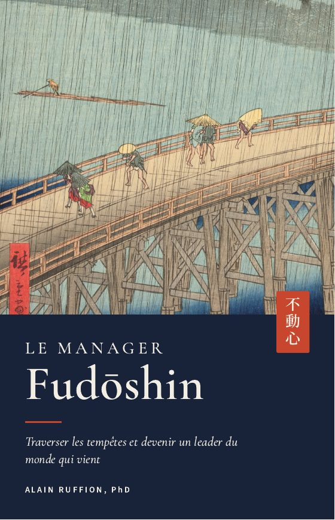
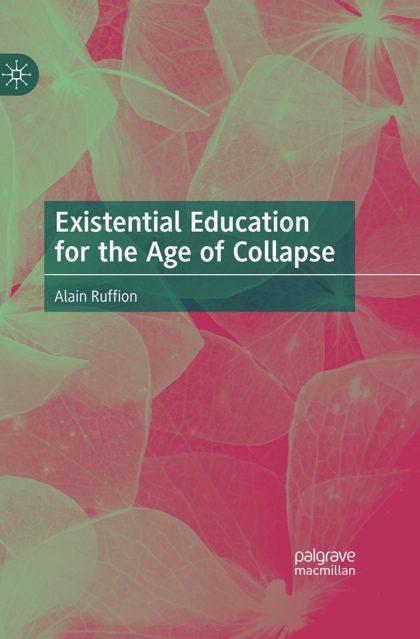
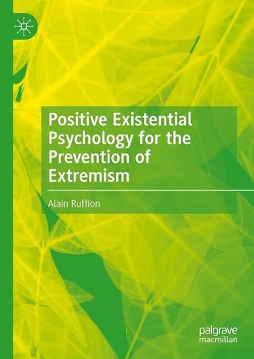
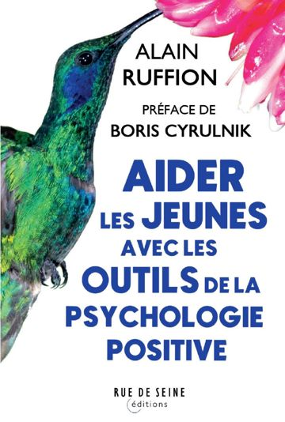
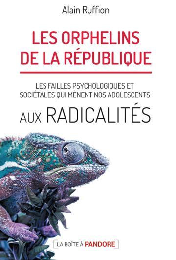
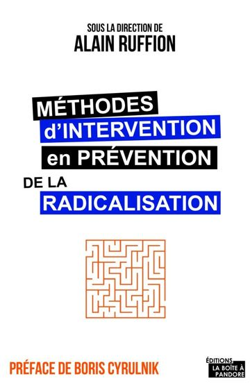
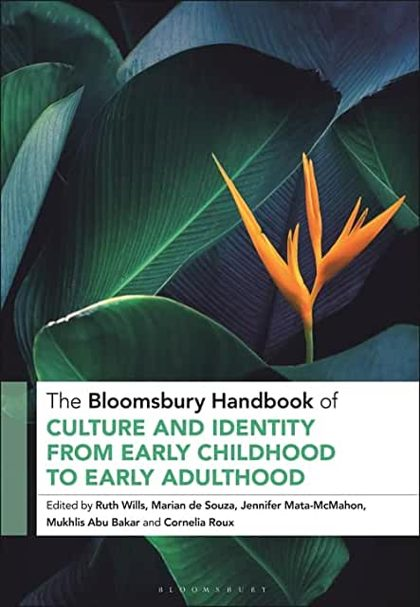
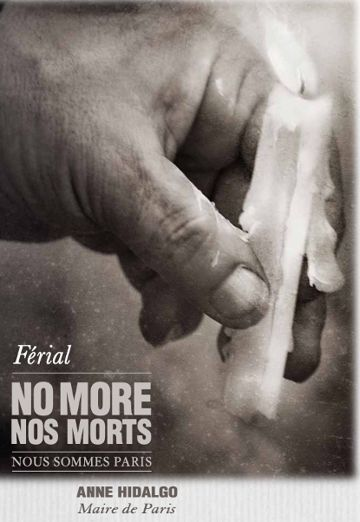
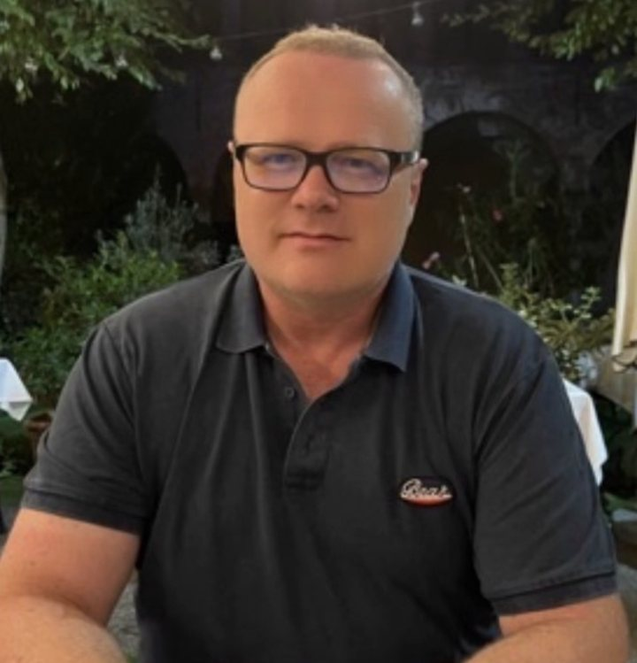

Études · Recherche · Actions · Nouvelles orientations socio-éducatives
Un banquet de la connaissance où chacun apporte sa part
C'est le sens du mot grec eranos. Depuis 2013, l'institut forme, accompagne et publie à la croisée de la psychologie positive, de l'éducation, de la médiation et de l'intelligence spirituelle des dirigeants.
modules de formation
Travail social, prévention des radicalisations, psychologie et éducation positives.
4prestations sur mesure
Intelligence émotionnelle, incertitude, médiation, soft skills des jeunes.
9publications
En français et en anglais, de 2016 à 2027, dont trois préfacés par Boris Cyrulnik ou Anne Hidalgo.
D'Homère au lac Majeur, puis à Nice
Le mot a traversé vingt-huit siècles en gardant la même idée : on vient avec ce qu'on a, et la table tient par ce que chacun y dépose.
Le repas partagé
Dans l'Odyssée, l'eranos est le repas où chaque convive apporte son écot.
La caisse d'entraide
Le mot désigne aussi le prêt sans intérêt qu'un cercle d'amis réunit pour l'un des siens.
Les rencontres d'Eranos
Olga Fröbe-Kapteyn ouvre sa maison au bord du lac. Jung, Kerényi, Eliade, Corbin et Scholem s'y succèdent pendant des décennies.
ERANOS Institute
Alain Ruffion fonde l'institut et reprend le principe pour l'éducation du XXIe siècle.
Quatre interventions conçues avec vous
Chaque prestation part d'un échange avec le formateur sur les besoins des participants, et se termine par une évaluation à chaud puis à froid.
Intelligence émotionnelle et efficacité managériale
Comprendre l'intelligence émotionnelle, repérer ses propres compétences et les appliquer à la communication, à la décision et à la gestion des conflits.
En savoir plus →02Développer ses ressources face aux changements et aux incertitudes
Observer son fonctionnement intérieur, réguler sa charge émotionnelle et son stress, récupérer de l'énergie.
En savoir plus →03Médiation professionnelle pour travailleurs sociaux
Gérer et résoudre les conflits entre résidents en hébergement d'urgence, dans un contexte multiculturel marqué par les traumatismes et la précarité.
En savoir plus →04Développer les soft skills chez les jeunes en insertion et en formation
Quatre jours pour travailler l'assise personnelle, les compétences cognitives, relationnelles et de réalisation. Cette prestation porte aussi la professionnalisation des intervenants du dispositif pairs.
En savoir plus →Trois catalogues, quarante modules
Une méthode active dans toutes les formations : études de cas, exposés interactifs, temps d'échange et évaluation par les apprenants.
Les fondamentaux du travail social et socio-éducatif
Bien-être au travail, communication et médiation, gestion des conflits, conduite de projet.
Voir les modules → MODULES 15 À 34Compétences spécialisées
Prévention des radicalisations, emprise, fait religieux en entreprise, direction en contexte incertain.
Voir les modules → MODULES 35 À 40Psychologie positive, éducation positive, éducation critique à la spiritualité
Les fondamentaux, l'insertion professionnelle, l'environnement, l'entreprise vertueuse.
Voir les modules →Fudōshin不動心
Trois mois en groupe de douze pour les managers qui affrontent tout en même temps : équipes en souffrance, réorganisations, IA, crises sociales. Le programme met en pratique le livre Le Manager Fudōshin, compétence par compétence, chacune avec son niveau de preuve.

L'intelligence spirituelle des dirigeants du XXIe siècle
Dans un monde entré en polycrise, la ressource décisive est intérieure. La recherche a appris à la définir, à la mesurer et à la cultiver.
Les livres de l'institut
Huit livres d'Alain Ruffion, seul ou en collaboration, et un chapitre dans un ouvrage collectif. Les titres disponibles s'ouvrent sur leur fiche Amazon.
Le Manager Fudōshin
2026Intelligence spirituelle et leaders du XXIe siècle
2026
Existential Education for the Age of Collapse
2027
Positive Existential Psychology for the Prevention of Extremism
2025
Aider les jeunes avec les outils de la psychologie positive
2023
Les orphelins de la République
2018
Méthodes d'intervention en prévention des radicalisations
2018
The Bloomsbury Handbook of Culture and Identity from Early Childhood to Early Adulthood
2021
No more, nos morts, nous sommes Paris
2016Alain Ruffion
Docteur en sciences de l'éducation, psychanalyste, professeur de psychologie positive et de psychopathologie à l'Université Ibn Tofail de Kénitra.

Né en Suisse, il a travaillé en Afrique du Nord, dans toute l'Europe, aux États-Unis et en Australie, chaque fois sur la communication interculturelle et la lutte contre le racisme et les extrémismes. Il a contribué à la fondation d'Unis-Cité, de France Médiation et d'ERANOS Institute.
Après l'attentat de la promenade des Anglais à Nice, en 2016, il a accompagné des centaines de jeunes et de familles et formé des milliers de professionnels et de parents à la prévention des radicalisations.